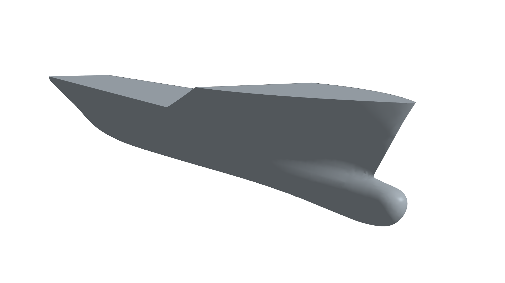
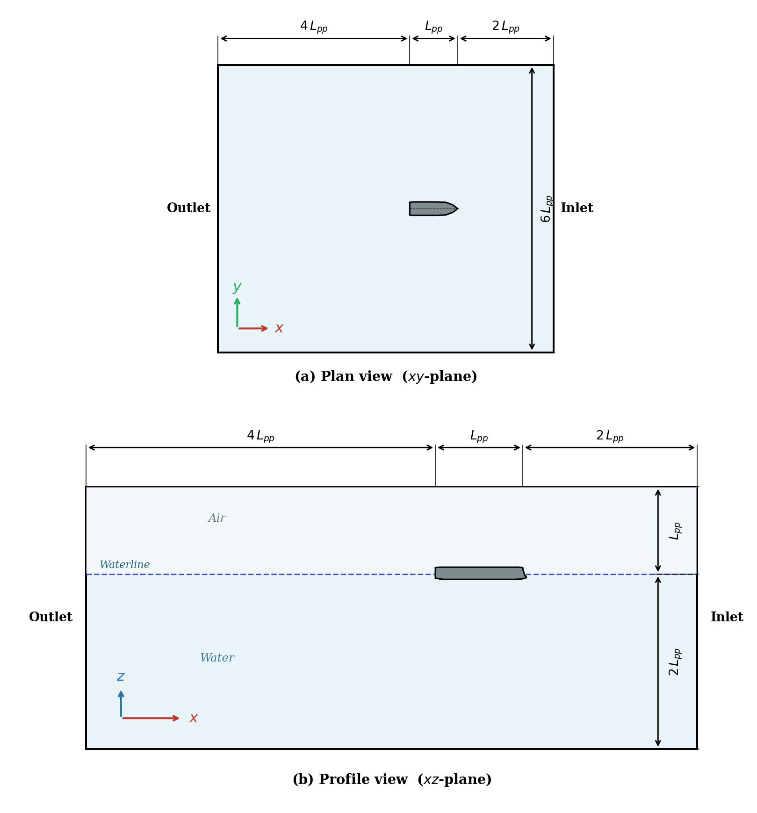
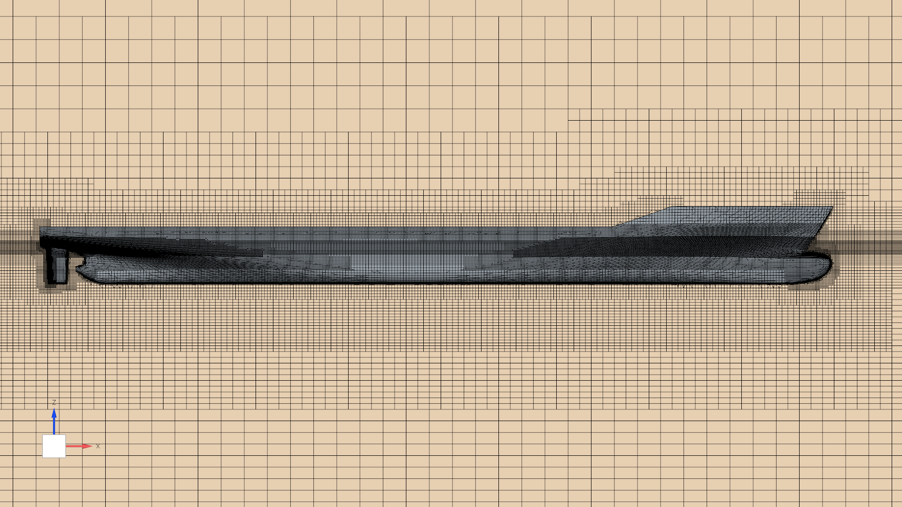
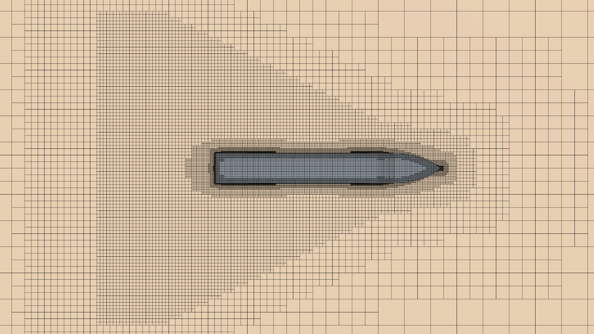
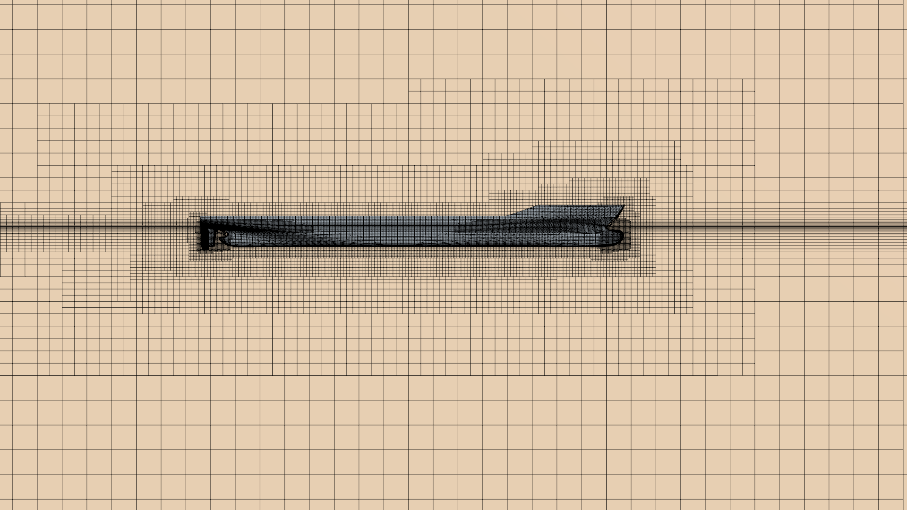
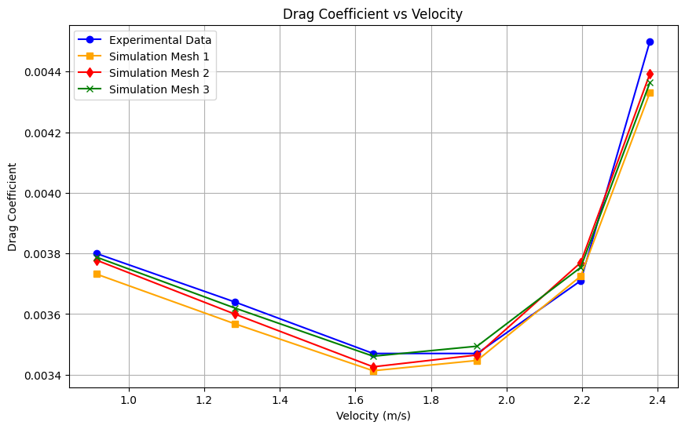
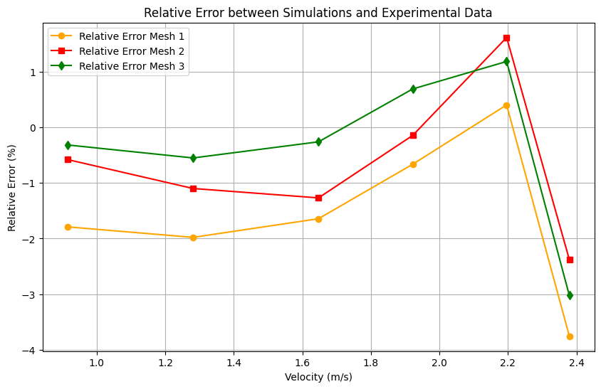

Validate against data
Comparing at six operating points exposes both the overall trend and the limits at the highest speed.
CFD case study · calm water
A calm-water CFD study of the KRISO Container Ship, comparing three mesh resolutions with experimental drag-coefficient data.

The objective
This first KCS project studies straightforward resistance to advance with free heave and pitch. CFD predictions at six velocities, from 0.915 to 2.379 m/s, are compared with the Tokyo 2015 KCS benchmark data provided by KRISO and the National Maritime Research Institute (NMRI), Japan. The aim is to develop the coarsest possible mesh that still delivers accurate results, creating a computationally efficient baseline for subsequent KCS studies — notably self-propulsion.
01 — Computational setup
The simulations use RANS closed with the k–ω SST turbulence model. The hull is free in heave and pitch, while the computational domain resolves the free surface and wake flow around the complete hull.
Six operating points cover Froude numbers from 0.108 to 0.282.

02 — Mesh & numerics

Each time step uses 10 inner iterations. The time step is 0.04 s, selected to keep the base-size Courant number of the order of one at maximum velocity — 0.846 for the baseline mesh.


03 — Results
The EFD drag coefficient decreases from Fr = 0.108 to approximately Fr = 0.23, before rising again at the highest speeds. All numerical meshes reproduce this trend closely.


Relative error (%)
| Velocity (m/s) | Mesh 1 | Mesh 2 | Mesh 3 |
|---|---|---|---|
| 0.915 | −1.79% | −0.58% | −0.32% |
| 1.281 | −1.98% | −1.10% | −0.55% |
| 1.647 | −1.64% | −1.27% | −0.26% |
| 1.922 | −0.66% | −0.14% | +0.69% |
| 2.196 | +0.40% | +1.62% | +1.19% |
| 2.379 | −3.76% | −2.38% | −3.02% |
What I learned
Mesh refinement improves the agreement, but Mesh 1 provides the best accuracy-to-cost trade-off for the next stage of the workflow.
Comparing at six operating points exposes both the overall trend and the limits at the highest speed.
Ten inner iterations and a 0.04 s time step give a stable, physically scaled transient solution.
The finest mesh is most accurate, but the baseline mesh is selected to preserve computational efficiency.
KCS calm-water CFD study